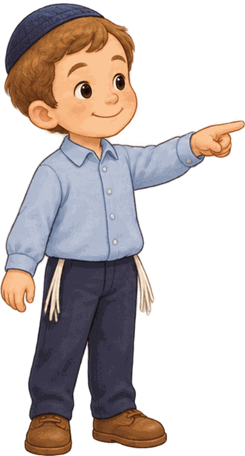

<!doctype html>
<html lang="en">
<head>
<meta charset="utf-8">
<meta name="viewport" content="width=device-width, initial-scale=1, viewport-fit=cover">
<title>Where Does It Go? — Kindergarten Numbers</title>
<!-- Kindergarten Numbers, Unit 6 "The path game": WHERE DOES IT GO? A soft wind blew some numbers off the garden path.
     He drags each number back to its empty stone (or taps the number, then the stone). The stones next door help:
     "After four comes five." Each round more stones are empty (2, then 3, then 4). On a phone the arrows move along the path. -->
<script type="importmap">{ "imports": { "three": "./lib/three.module.min.js" } }</script>
<link rel="stylesheet" href="frame.css"><link rel="stylesheet" href="unit6.css">
</head>
<body>
<div id="world"></div>
<div id="game" class="locked"><div class="stage s6" id="stage">
  <div class="ui" id="panel">
    <button id="left" class="bigbtn btn3d b-white" aria-label="Look left" hidden><svg viewBox="0 0 48 48"><path d="M30 10 16 24l14 14" stroke="#2B2350" stroke-width="7" fill="none" stroke-linecap="round" stroke-linejoin="round"/></svg></button>
    <div class="srcs" id="src"></div>
    <button id="right" class="bigbtn btn3d b-white" aria-label="Look right" hidden><svg viewBox="0 0 48 48"><path d="M18 10l14 14-14 14" stroke="#2B2350" stroke-width="7" fill="none" stroke-linecap="round" stroke-linejoin="round"/></svg></button>
  </div>
</div></div>
<script src="kit.js"></script><script src="frame.js"></script><script src="unit5.js"></script>
<script type="module">
import { mount } from './path6.js';
const $ = id => document.getElementById(id);
let P, M, R, done;
const band = () => [innerWidth < 760 ? 80 : 92, $('panel').getBoundingClientRect().top - 8];
function left() { return R.gaps.filter(n => !R.put[n]); }
function hooks() {
  const g = left(); if (!g.length) { GAME.right = GAME.wrong = null; return; }
  const k = g[0], other = g.find(n => n !== k), bad = other != null ? other : (k === 10 ? 9 : k + 1);
  GAME.right = () => { P.focus(k, true); return [{ drag: ['#src .numcard[data-n="' + k + '"]', '.stone[data-n="' + k + '"]'] }]; };
  GAME.wrong = () => { P.focus(bad, true); return [{ drag: ['#src .numcard[data-n="' + k + '"]', '.stone[data-n="' + bad + '"]'] }]; };
}
function cards() {
  $('src').innerHTML = ''; FR.shuffle(R.gaps).forEach(n => { const c = document.createElement('div'); c.className = 'numcard'; c.dataset.n = n; c.innerHTML = U5.num(n); $('src').appendChild(c); });
}
async function drop(card, stone) {
  if (GAME.phase !== 'answer') return; const k = +card.dataset.n, at = +stone.dataset.n;
  GAME.phase = 'busy'; FR.lock(true);
  if (k === at) {
    card.classList.add('done'); R.put[k] = true; P.shown(k, true); P.lift(k); P.petals(k); NK.sound.yes();
    await FR.say(FR.pick([FR.Word(k) + '! Back home.', 'Yes! ' + FR.Word(k) + '.', FR.Word(k) + ' goes there!']));
    if (!left().length) { await FR.yes(stone, FR.pick(['The path is fixed!', 'All the numbers are home!'])); const d = done; done = null; d(R.misses === 0); return; }
    GAME.phase = 'answer'; FR.lock(false); hooks(); return;
  }
  FR.oops(stone); R.misses++;
  /* help: the numbers next door */
  const b = k - 1, a = k + 1, hasB = b >= 0 && !R.gaps.includes(b) || R.put[b], hasA = a <= 10 && (!R.gaps.includes(a) || R.put[a]);
  if (!R.gaps.includes(at) || R.put[at]) await FR.say('That stone has its number. Look for an empty one.');
  else if (hasB) { P.focus(b); P.glow(b, true); await FR.say("Let's look. After " + FR.word(b) + ' comes ' + FR.word(k) + '.'); P.glow(b, false); }
  else if (hasA) { P.focus(a); P.glow(a, true); await FR.say("Let's look. Just before " + FR.word(a) + ' is ' + FR.word(k) + '.'); P.glow(a, false); }
  else await FR.say("Let's look. Count from zero to find it.");
  if (R.misses >= 2) { P.focus(k); P.el(k).classList.add('hint'); setTimeout(() => P.el(k).classList.remove('hint'), 2600); }
  GAME.phase = 'answer'; FR.lock(false); hooks();
}
function play(F, i) {
  return new Promise(async res => {
    const many = i < 2 ? 2 : i < 4 ? 3 : P.narrow() ? 3 : 4, pool = FR.shuffle([1, 2, 3, 4, 5, 6, 7, 8, 9, 10]);
    let gaps; if (P.narrow()) { const s = 1 + Math.floor(Math.random() * 7); gaps = FR.shuffle([s, s + 1, s + 2, s + 3].filter(n => n <= 10)).slice(0, many).sort((a, b) => a - b); }
    else gaps = pool.slice(0, many).sort((a, b) => a - b);
    R = { gaps, put: {}, misses: 0 }; done = res; P.showAll(true);
    GAME.phase = 'busy'; FR.lock(true); NK.sound.cloth && NK.sound.cloth();
    gaps.forEach(n => P.shown(n, false)); cards(); P.focus((gaps[0] + gaps[gaps.length - 1]) / 2);
    await F.say(i === 0 ? 'Whoosh! The wind blew numbers away.' : FR.pick(['Whoosh! Put them back!', 'Oh no, more empty stones!', 'Fix the path!']));
    GAME.phase = 'answer'; F.lock(false); hooks();
    await F.say('Put each number home.', { repeat: 'Drag each number to its empty stone.' });
  });
}
FR.game({
  id: 'u6-where', title: 'Where Does It Go?', rounds: 6,
  hero: '<div class="hero6"></div>',
  init() {
    P = mount($('world'), { kids: ['mendy'], band }); M = P.kids.mendy; M.show(false);
    FR.dragTap({ sources: '#src .numcard', targets: '.p6layer .stone', drop });
    if (P.narrow()) { $('left').hidden = $('right').hidden = false; $('left').onclick = () => { NK.sound.pop(); P.pan(-2); }; $('right').onclick = () => { NK.sound.pop(); P.pan(2); }; }
  },
  demo: async F => {
    R = { gaps: [3], put: {}, misses: 0 }; P.shown(3, false); cards(); P.focus(3);
    await F.say('Three blew away! Watch me.'); await F.say('After two comes three.');
    await F.handDrag($('src').querySelector('.numcard'), P.el(3)); P.shown(3, true); P.lift(3); NK.sound.yes(); $('src').innerHTML = '';
    await F.say('Three goes after two!');
  },
  round: (F, i) => play(F, i),
  endSay: s => s >= 2 ? 'You know where numbers live!' : 'Good work! Let\'s play once more.'
});
</script>
</body>
</html>
